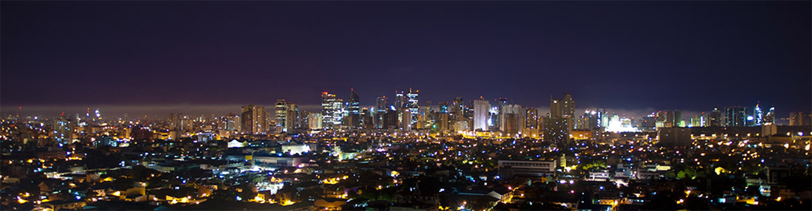
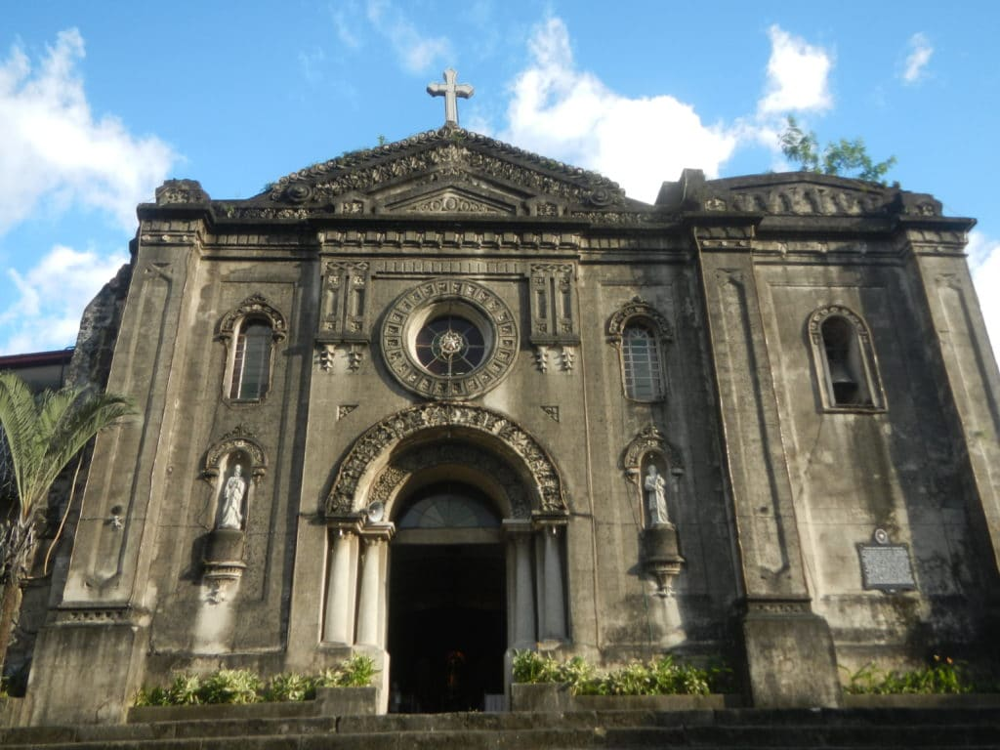
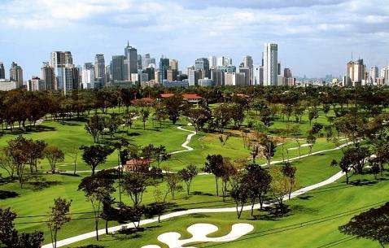
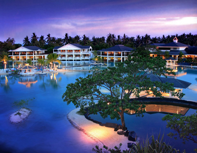

WELCOME TO MAKATI
Makati City is about 6km from the airport. It lies in the heart of big Metro Manila and is known for its upscale shopping malls home to high fashion brands, restaurants, hotels and affluent Filipinos.
Makati is considered the financial, commercial and economic hub where the Philippine Stock Exchange (PSE) is located. It is also the preferred address of large multinational corporations. Makati is a city in the Philippines Metro Manila region and the countrys financial hub. Its known for the skyscrapers and shopping malls of Makati Central Business District, and for Ayala Triangle Gardens, an area dotted with trees and sculptures. Ayala Museum houses the Filipinas Heritage Library and craft collections documenting the countrys history. The Rizal Monument is a memorial to national hero Jose Rizal.
Photo


  Home
History
Destinations
Blog
Contact Us
Home
History
Destinations
Blog
Contact Us